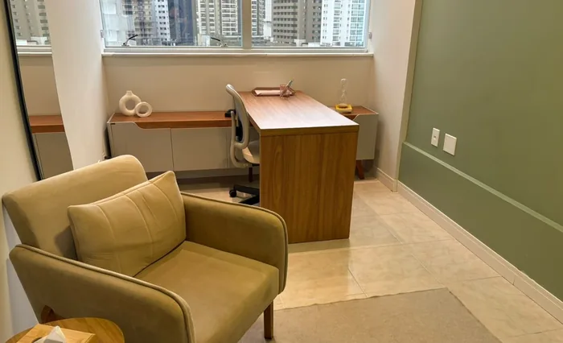
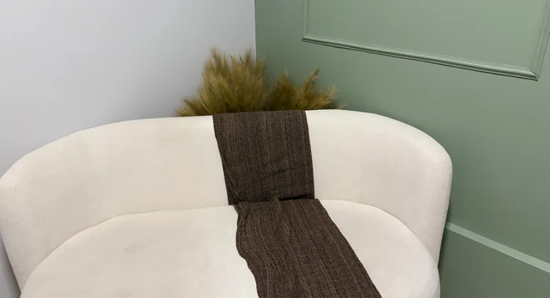

Reuniões de alinhamento
Podem ser agendadas sempre que você desejar, para informar uma nova queixa ou um acontecimento que considere relevante.
Psicóloga infantojuvenil · CRP 16/11644
Compreender antes de corrigir.
Psicoterapia para crianças, adolescentes e jovens de 5 a 26 anos, com a família participando do processo. Atendimento presencial em Vitória (ES) e online para todo o Brasil.
Sobre mim
Atendo crianças, jovens e adolescentes, trabalhando com a abordagem da Terapia Cognitivo-Comportamental (TCC). Sou pós-graduada em Avaliação Psicológica, aplicando testes psicológicos e entregando laudos.
Meu propósito é caminhar junto com a criança e sua família, ajudando-a a se desenvolver e acolhendo as queixas trazidas antes e durante o processo terapêutico. Você acompanha o processo de perto, sabendo o que está sendo trabalhado e como atuar em casa. Trabalhamos em uma via de mão dupla.
Como eu trabalho
Atendimento fundamentado na TCC, com sigilo ético e processo explicado desde o início. Você conhece cada etapa.
Um espaço em que a criança se sente à vontade e os pais são ouvidos, sem julgamentos.
Combinados claros desde o início, contato frequente e disponibilidade pelo WhatsApp para qualquer dúvida.
Relatórios, reuniões e contato com a escola, quando necessário, tudo devidamente documentado.
Atendimentos
Escolha um atendimento para ver para quem é e como funciona.
Para crianças, adolescentes e jovens, no consultório na Enseada do Suá, em Vitória. O processo começa com a entrevista de anamnese, para compreender melhor a queixa e o que leva o paciente à terapia.
Entender para orientar. A avaliação inclui o processo completo, do primeiro encontro à entrega do laudo. Cada consulta tem 1 hora de duração.
Conversa inicial para compreender a história e a queixa.
Sessões de 1 hora. A quantidade varia de caso para caso.
Reunião para explicar os resultados e entregar o laudo.
Para todo o Brasil, com a mesma escuta do consultório.
Participação dos responsáveis
Aqui, o meu paciente é a criança, mas os responsáveis participam do processo.
Podem ser agendadas sempre que você desejar, para informar uma nova queixa ou um acontecimento que considere relevante.
Agendada por mim, psicóloga, quando percebo a necessidade de passar orientações para os pais colocarem em prática.
Realizada a cada 6 meses, com o retorno sobre o trabalho clínico e a entrega do relatório psicológico, que apresenta a análise clínica e os processos terapêuticos em andamento.
Consultório


Dúvidas
Crianças, adolescentes e jovens de 5 a 26 anos no consultório, em Vitória. O atendimento online é exclusivo para jovens de 18 a 26 anos.
Com a entrevista de anamnese, uma conversa para compreender melhor a queixa e o que leva o paciente à terapia.
Sim. O paciente é a criança, mas os responsáveis participam por meio das reuniões de alinhamento, da orientação parental e da reunião de devolutiva, a cada 6 meses.
Sim, quando necessário. No atendimento de crianças e adolescentes, a visita escolar faz parte dos serviços oferecidos, e tudo é devidamente documentado.
Um processo com anamnese, aplicação de testes psicológicos em sessões de 1 hora e uma reunião de devolutiva com a entrega do laudo. A quantidade de sessões varia de caso para caso.
Por vídeo, no Google Meet. O link é enviado 5 minutos antes do horário, e as sessões podem ser semanais ou quinzenais.
É só chamar no WhatsApp. Eu envio as informações e os horários disponíveis.
Contato
Atendimento presencial em Vitória, Espírito Santo, e online para todo o Brasil. Entre em contato pelo WhatsApp para esclarecer dúvidas e agendar seu horário.